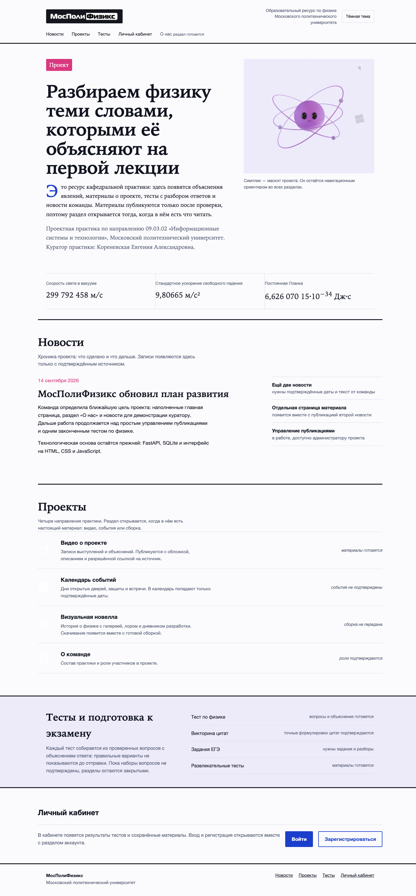

1. Редакционный журнал
Асимметричная полоса главного материала, антиква, буквица, рубрики цветом
Главная строится вокруг текста: большой заголовок, врезка с фактами, новость как материал номера, рубрики в теге. Маскот на обложке, физический паттерн в рамке.
Открыть вариант